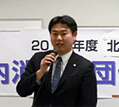

- 【日 時】
- 1月21日（月）13：30～16：00
- 【場 所】
- 熊谷市男女共同参画推進センター 会議室
- 【出席者】
- 県内消費者団体11団体40人
（上尾市消団連、桶川市くらしの会、行田市くらしの会、くまがやくらしの会、秩父市くらしの会、めぬまくらしの会、生活協同組合さいたまコープ、埼玉県消費生活コンサルタントの会、NPO法人埼玉消費者被害をなくす会、埼玉県地域婦人会連合会、埼玉県生協ネットワーク協議会）、2行政機関、※資料提供参加：22団体
1．開会
埼玉県消費者団体連絡会より幹事団体である県地域婦人会連合会 森 和江副会長の司会で開会が告げられ、開会しました。
2．市町村の行政との懇談について 提案
消団連岩岡 宏保事務局長より今年度地区別交流会の開催目的と、テーマの一つ「消費者教育推進法」の学習についてふれ、「県内の各市町村で行政と懇談していきましょう」と提起され、「これからのより良いくらしのために、楽しく交流してください」と挨拶されました。
3．学習会 「消費者教育推進法」と「消費者教育推進協議会」
弁護士の猪原 英和さん（埼玉弁護士会）を講師に、昨年夏に成立した「消費者教育推進法（以下「推進法」）」について、その制定と取り組みについて学びました。

- 「推進法」は被害にあわない賢い消費者になるために消費者教育を支援する法律です。
- 消費者が商品、サービス、企業を賢く選択することで事業者を育て、自ら権利を守る。その賢い消費者を育てる支援をするのが行政の責任であることが、この法律の中に明記されています。
- 地方公共団体は財政上の措置を講じること（努力義務）、その一つとして県・市町村に「消費者教育推進協議会」を作ること、その他、国・地方に学校・地域における消費者教育の推進が義務付けられています。また消費者団体に対しても消費者教育を自主的に行い、協力することが努力義務として記されています。今後は、「協議会」への参加や、意見交換、働きかけができます。学校、地域だけでなく一体化して、消費者団体と専門家団体（消費生活相談員、弁護士等）との協力関係で取り組みを推進しましょう。
4．グループ交流
（１）学習テーマと各団体の創設をふりかえって（２）平成24年度埼玉県市町村における消費生活関連事業調査から読み取る、わが町の様子について、4つのグループで話し合い、交流しました。
|